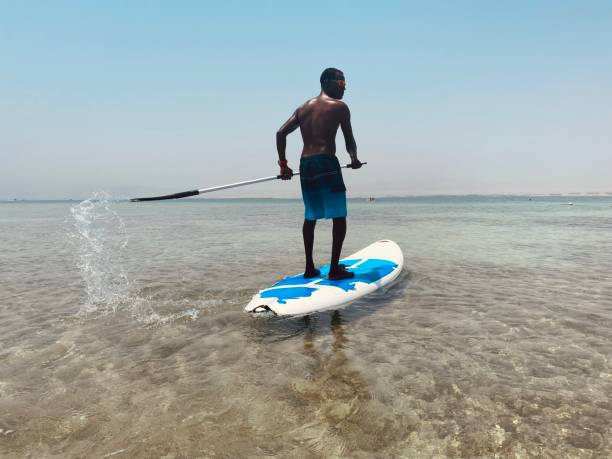
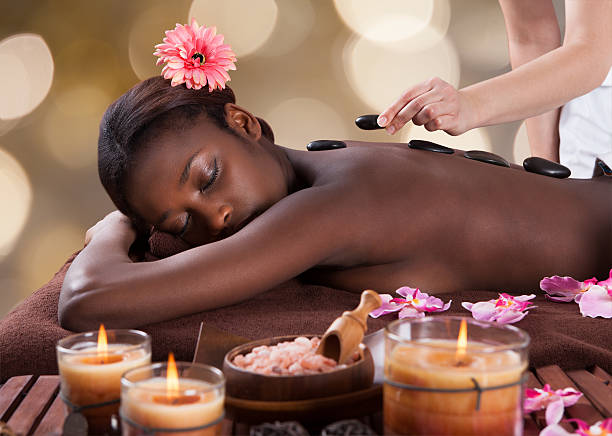
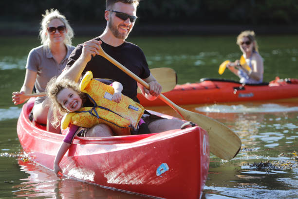

Night Snorkeling
You’ll find snorkeling at many luxury resort destinations, but night snorkeling is an experience like no other.While night snorkeling, you’ll find nocturnal fish that aren’t visible during the day. Or you may experience fish that change as the sun goes down.
Stand Up Paddle Boarding
This sport is popular for a reason and it makes for a fantastic vacation activity at a luxury resort.When the waters on your beach are calm and warm, stand up paddle boarding can be just as relaxing as it is good for you.Get the blood flowing and warm up your muscles while taking in the scenery around you.
Massage
Release any tension that’s built up from your fast-paced life and relax with a professional massage.While visiting most luxury resorts, you can expect to find a dedicated spa staff.Massage therapy is one of those essential aspects of any vacation that you should partake in and, if you’re enjoying your getaway with a partner, relax together and enjoy a couple’s massage.
River Boating
The bodies of water that surround your luxury resort provide endless opportunities for exploration. At Lavista, we offer exploration of the nearby river by boat. Float through the mangroves of Bwa Mang trees and bathe in the warm waters.
Concerts

Concerts are a fantastic vacation activity. Enjoy the native music of Lavista and sway to the rhythm as you take in the beautiful soundtrack of your vacation. Some resorts will provide private concerts. At Lavista, we provide jazz and acoustic private concerts by native musicians for you to enjoy in the comfort of your villa or bungalow.